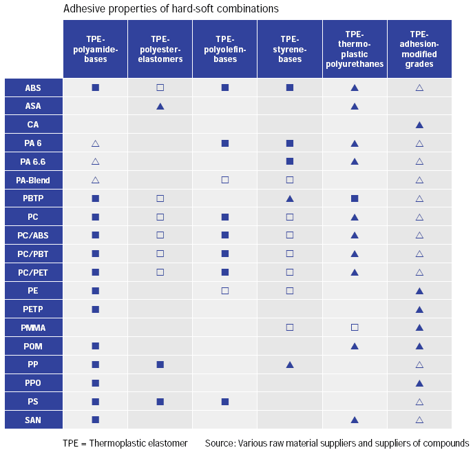
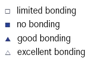
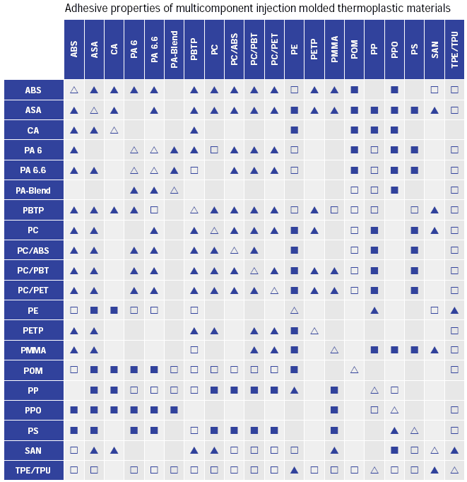
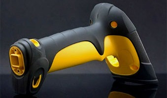
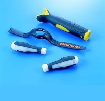
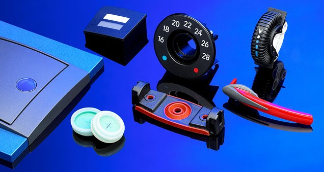
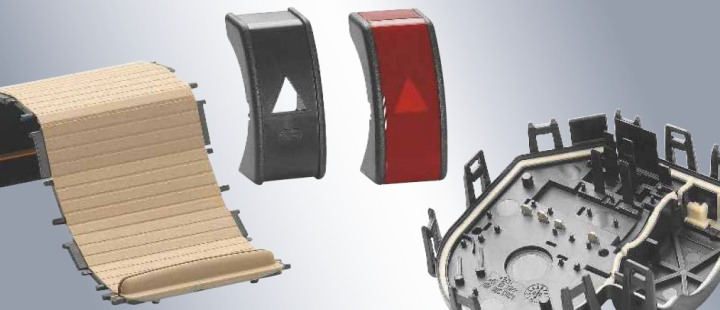
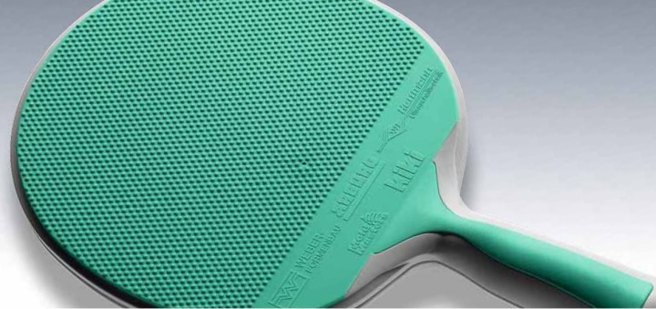
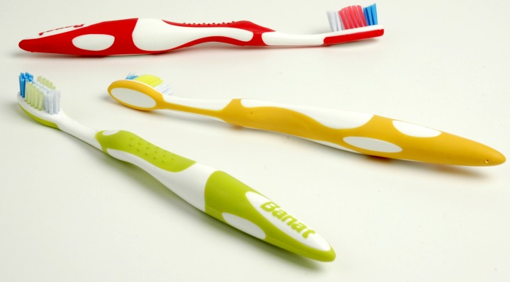
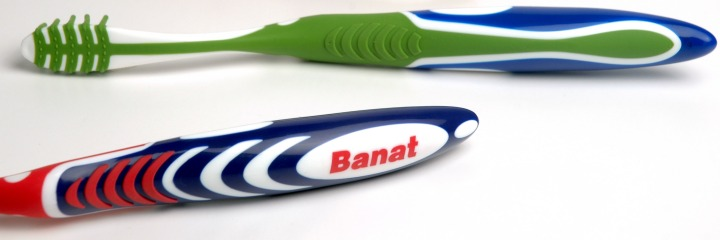

|
5. Ko enjeksiyonda kullanýlan plastikler:
Ko enjeksiyonda kullanýlan malzemeler arasýnda kimyasal olarak bað oluþmak zorundadýr. Birbirinden farklý iki malzeme bað kurup birbirine yapýþmalýdýr. Her malzeme birbirine bað kuramaz ve yapýþamaz. Bu teknikte malzeme seçimi çok önemlidir. Ko enjeksiyonun faydalarýndan biride maliyeti düþürmek olduðu için örnek olarak yüzey kalitesi önemli olan bir parçada yüzeyde kaliteli malzeme kullanýrýz fakat çekirdek önemli olmadýðý için ucuz plastik kullanmak avantajlý olacaktýr. Ýþte kullanacaðýmýz bu plastikler arasýndaki bað plastik seçimini etkiler (4).

|  |
- Limited bonding: Belirli miktarda etkileþime girer, bað kurar.
- No bonding: Etkileþime giremez bað kuramaz.
- Good bonding: Ýyi etkileþime girebilir iyi bað kurar
- Excellent bonding: Çok iyi bir þekilde etkileþime girer ve çok iyi bað kurar.
|

Kaynak: www.battenfeld-imt.com > mehrkomponenten_en.pdf
Diðer uygulama örnekleri:





BANAT, "EXCLUSIVE" diþ fýrçasý. Malzeme: PP, TPRs - üretim yöntemi: plastik enjeksiyon. Doðru ergonomik datalar göz önünde bulundurularak tasarlanmýþ çift komponentli diþ fýrçasý tasarýmý
Kaynak: Kunter Þekercioðlu, Kilit Taþý Tasarým Mimarlýk Ltd.

BANAT, "TRI-ACTION" diþ fýrçasý, malzeme: PP, TPRs - üretim yöntemi: plastik enjeksiyon. Doðru ergonomik datalar göz önünde bulundurularak tasarlanmýþ üç komponentli diþ fýrçasý tasarýmý. Türkiye'de tasarlanmýþ ve üretilmiþ ilk üç komponentli diþ fýrçasý.
Kaynak: Kunter Þekercioðlu, Kilit Taþý Tasarým Mimarlýk Ltd.
6. Sonuç ve irdeleme:
Ko enjeksiyonla kalýplamanýn enjeksiyonla kalýplamadan en büyük farký iki renk ya da malzemenin ayný kalýpta basýlmasýdýr. Ko enjeksiyon teknolojisinin öncüleri Alman Siemag ve Ýtalyan Presma'dýr. Bu teknoloji 15 yýldan daha fazla süredir kullanýlmakta olsa da üretilen parçalar hayatýmýzýn hemen hemen her yerinde bulunmaktadýr.
Ko enjeksiyon teknolojisinin enjeksiyonla kalýplama teknolojisinden üstünlükleri sadece çift renk ya da çift malzeme basýlabilmesiyle sýnýrlý deðildir. Teknolojinin her geçen gün geliþmesi kalýp sektörünün de geliþmesi demektir. Bu da üretilen ürünlere yansýmaktadýr ve enjeksiyondan farklý özellikleri de ko enjeksiyonda bulabiliriz. Ko enjeksiyon teknolojisiyle üretilen parçalarýn sesi absorbe etme, parçalarýn aðýrlýðýný azaltma, kalýn parçalarda iki farklý malzeme kullanýmý ile iç kýsýmdaki malzemenin termoplastiklerin ikinci defa kullanýmý dýþ yüzeye ise kaliteli plastik kullanýmý ile fiyatta azalma saðlanmasý, ince malzemelerde yüzey kalitesinin yüksek olmasý gibi özellikleri ile enjeksiyon kalýplarýndan üstünlüðü görülmekte fakat enjeksiyon makinelerinin maliyetlerinin yüksek olmasý da ayrý bir dezavantaj olarak bilinmektedir. Ayrýca ko enjeksiyon teknolojisindeki kalýplarda karýþýk yolluk sistemleri, yolluk giriþ yeri seçimi, sabit grup tasarýmý enjeksiyon kalýplarýna göre tasarým aþamasýndaki zorluklarýndandýr.
Kaynaklar:
1. KALIP.NET (www.kalip.net)
2. Plastic Mold Engineering Handbook (J. Harry DuBOIS ve Wayne I. PRIBBLE)
3. Plastic Part Design For Injection Molding (Robert A. Malloy)
4. www.presma.com/c_coinjection/_faqs.html
5. http://plastics.bayer.com/plastics/emea/en/technology/1012/article.jsp?docId=1885&cid=1012
6. www.ticona.com/index/tech/processing/special_injection_molding/multi-component.htm
7. How To Make Injection Molds (Georg Menges ve Paul Mohren)
8. Injection Molding Handbook, Tim A. Oswald, Lih-Sheng Turng, Paul J. Gramann.
Hanser Publishers, 2002
9. www.battenfeld-imt.com/en/anwendungstechnik/mehrkomponenten-spritzgiessen.html > Multicomponent technology
10. www.medplastgroup.com/plasticrubbermolding.html
11. www.awm.ch/en/8-dokumentation/media/Broschuere_E.pdf > Injection Molding - State of the Art
12. www.arburg.com/com/common/download/WEB_522771_en_GB.pdf > Multi-component injection moulding, ARBURG
13. www.arburg.com/com/common/download/WEB_523046_en_GB.pdf > Application expertise in injection moulding technology, ARBURG > Multi-component injection moulding
Ýlgili rapor/makale:
Ko Enjeksiyon (Birden Çok Bileþenli Enjeksiyon Kalýplarý):
Erkut Yapýcýoðlu, Gazi Üniv. Teknik Eðitim Fakültesi, Aralýk 2005, Ankara
Ko enjeksiyon, diðer adýyla birden çok bileþenli enjeksiyon kalýplarýdýr. Ko enjeksiyon farklý renk plastiklerin ya da farklý plastiklerin tek kalýpta basýlmasýna olanak saðlayan bir tekniktir, ilk olarak 1967 yýlýnda Ýngiltere'de ICI firmasý tarafýndan geliþtirilmiþtir... |
|
|